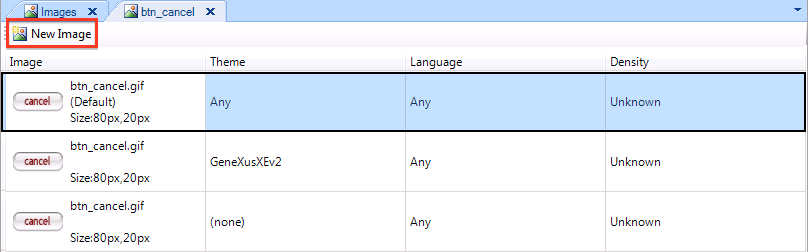

To use an image that varies depending on the theme, language, screen density or any combination of these variables, we need to add them to the same Image object.  Once we have the new images added to the object, we need to which combination of Theme, Language and Density they apply.
|
| Backlinks | |
| Density property | Category:Image object |
| Images for Smart Devices applications | Toc:Smart Devices Applications Development (GeneXus 16) |